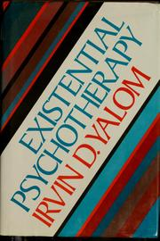

Existential Psychotherapy
Book·Irvin Yalom, 1980·存在主义心理治疗

A systematic account of four ultimate concerns.
- Author
- Irvin Yalom
- Year
- 1980
- Difficulty
- Advanced
- Kind
- Primary text
- Schools
- Existential Psychotherapy
- Core theories
- Ultimate Concerns
Editions
- Chinese edition 《存在主义心理治疗》 [美] 欧文·亚隆 · tr. 黄峥 / 张怡玲 / 沈东郁 · 商务印书馆 · 2015 Douban 9.5 (9869 ratings) Douban page ↗
- English edition Existential Psychotherapy Irvin D. Yalom · Basic Books, first edition · 1980 Open Library ↗